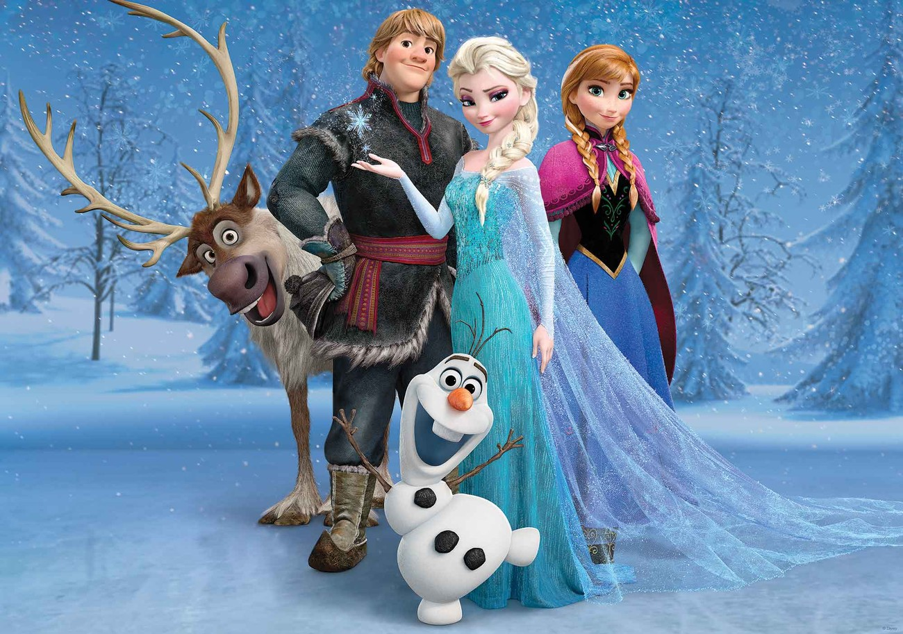

About Olaf
Olaf is awesome! He's the snowman Anna and Elsa built together as kids. Olaf is not only funny, he also represents innocent love. Elsa created him a snow cloud to stand directly above him so he could fulfill his dream of living in summer without melting.
"Hi! I'm Olaf and I like warm hugs!"
Olaf and his friends
Olaf's Characteristics
- He is a snowman
- He likes warm hugs
- he loves summer
Olaf's friends
Olaf has some awesome friends. Click on the links below to read more about them: